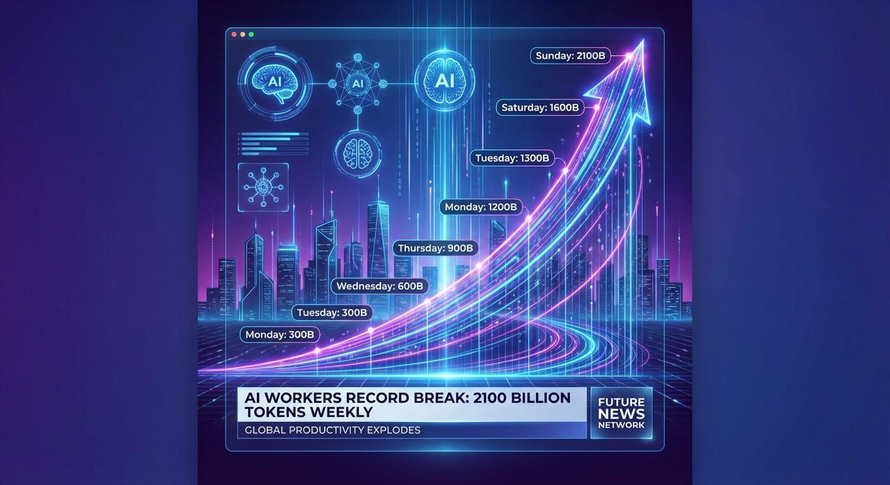
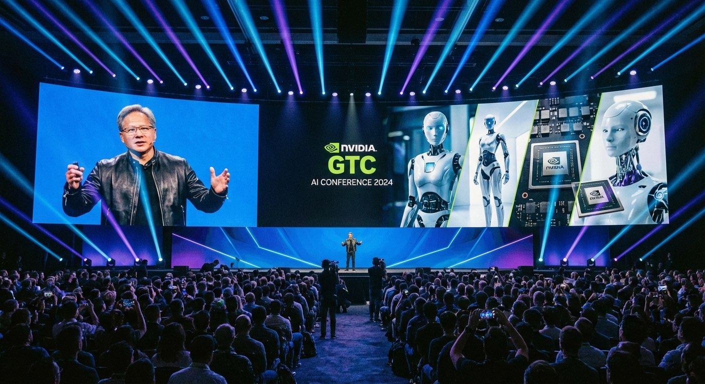

📡 真实新闻 · 虚构点评
🤖 AI周刊
创业者的3个"早知道"
2026年3月21日 · 第12期

🔥 热点
OpenAI员工一周跑了2100亿token，相当于33个维基百科
来源：
纽约时报
· 2026年3月20日 · ✅ 真实新闻
一名OpenAI工程师创下内部记录：一周内通过公司AI模型处理了2100亿个token。"Tokenmaxxing"成为硅谷新热词——用最大算力压榨AI产出。有人用它一天写完了原本一个月的代码。
陈
陈磊
· AI工具创业者（虚构点评）
"我看完这条新闻就改了产品定价。以前按月收费，现在按token用量收——因为真正会用的人，用量是普通人的100倍。"

🧠 科技
英伟达GTC 2026：黄仁勋发布AI机器人全栈方案
来源：
英伟达官方
· 2026年3月16-19日 · ✅ 真实新闻
全球AI风向标大会GTC 2026在圣何塞举行。黄仁勋穿着标志性黑色皮衣，宣布与智元机器人等全球机器人厂商合作，推出从芯片到软件的AI机器人全栈解决方案。机器人时代，可能比我们想的更近。
李
李薇
· 硬件创业者（虚构点评）
"去年我们还在纠结要不要做机器人，今年老黄直接把从芯片到软件全栈都铺好了。留给创业者的问题变了——不是'做不做'，而是'用它来解决什么问题'。"
⚖️ 政策
美国防部想弃用Anthropic Claude，但军方用户说没那么容易
来源：
路透社
· 2026年3月19日 · ✅ 真实新闻
美国国防部长下令五角大楼停用Anthropic的Claude模型，但一线军方用户表示很难替换——日常情报分析、文档处理已经深度依赖。同时，俄罗斯也在酝酿限制境内使用外国AI工具。AI正在成为新的地缘博弈筹码。
周
周毅
· 企业服务创业者（虚构点评）
"这条新闻我看了三遍，第三遍才看懂它和我有什么关系——我们的客户也在用Claude，如果哪天也'被弃用'，替换成本谁来出？"
📌 新闻内容均为真实报道 · 创业者点评为虚构视角
数据来源：纽约时报、路透社、英伟达官方